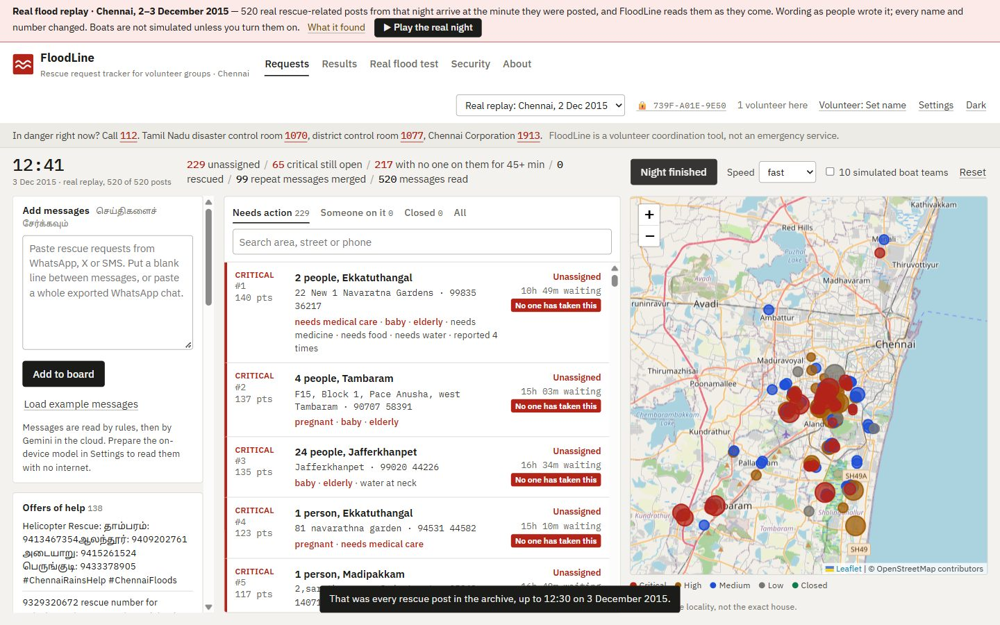
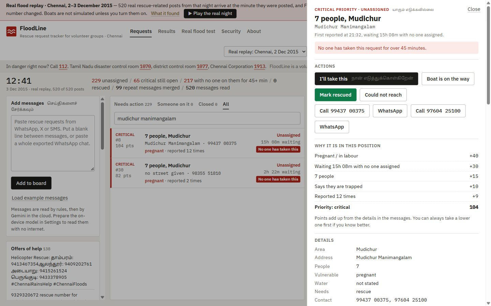
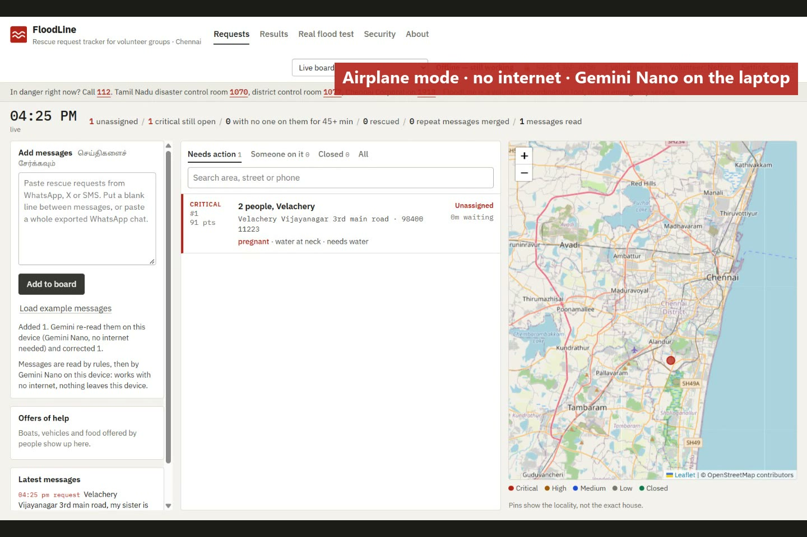
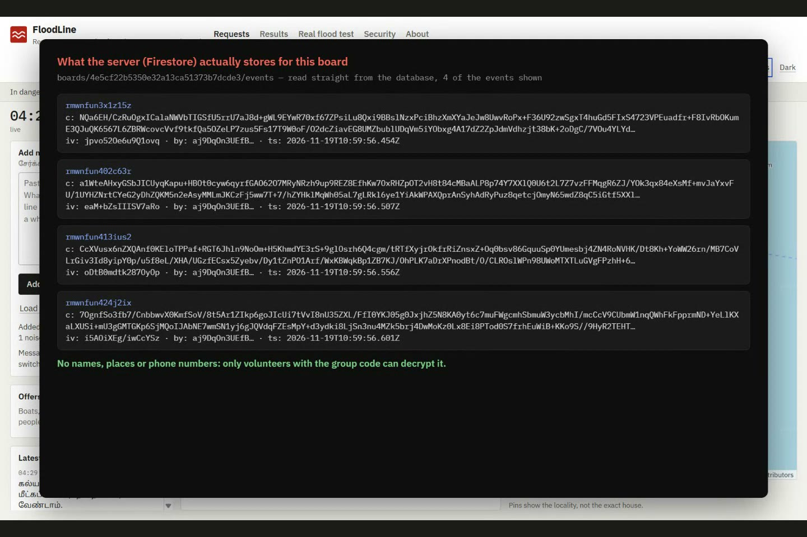

Volunteers paste the SOS messages. FloodLine reads them with AI on the laptop, groups repeats, ranks urgency and makes sure no request is lost. People decide who is rescued.



On 60 labelled posts the board gets 89.9% of details right with cloud Gemini, 79.8% with Gemini Nano offline, 81.1% with rules alone. Initial check: labels made with the AI assistant; independent labelling in progress. Data: public CC0 archive, names and numbers replaced.
